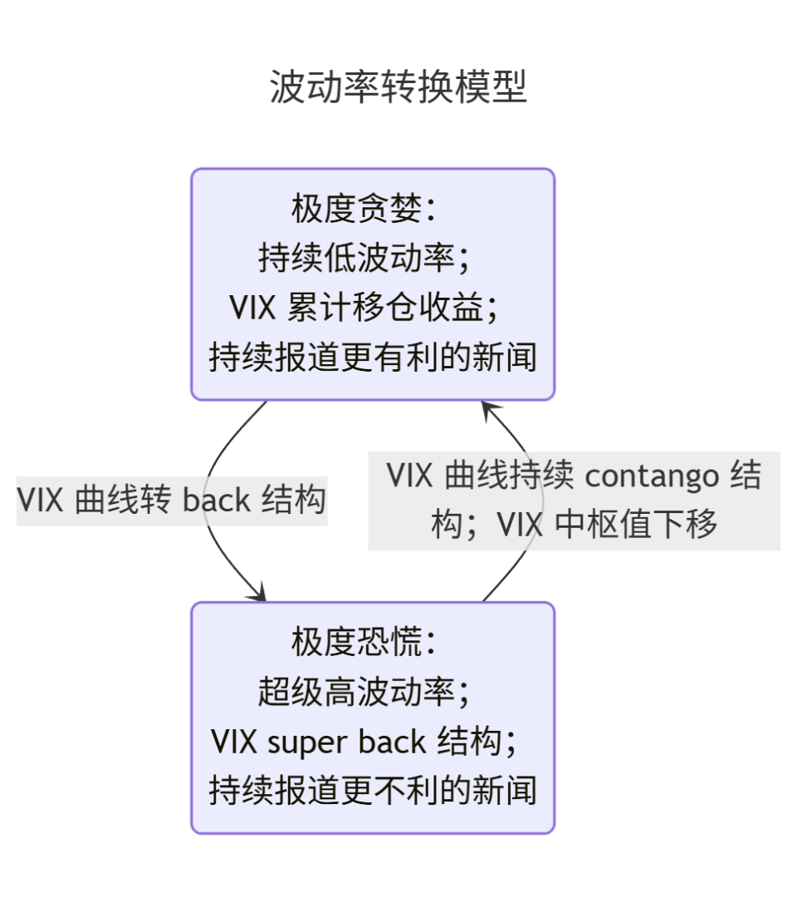

标准操作流程 SOP#
收集数据并分类#
对于所有数据指标的研究，都只分为资产端和负债端 2 类，并将负债端展开成 3 个子类。
由于资产端（Asset）和负债端（Liability）的恒等关系，变化速度相对快或幅度相对大的一端将会牵引另一端发生变动。
资产端主要指盈利（Profit）；负债端的 3 个子类分别是风险（Risk）、信贷（Credit）和杠杆（Leverage）。
风险（Risk）：主要包含风险溢价和情绪等。
信贷（Credit）：主要包含基准利率和信用利差等。
杠杆（Leverage）：主要包含准备金规模和估值等。
资产端驱动模型：
盈利增加 → 信贷宽松 → 风险下降 → 杠杆扩张 → 盈利增加 → …
盈利降低 → 信贷紧缩 → 风险上升 → 杠杆收缩 → 盈利降低 → …
负债端驱动模型：
信贷宽松 → 风险降低 → 杠杆扩张 → 盈利增加 → 信贷宽松 → …
信贷紧缩 → 风险上升 → 杠杆收缩 → 盈利降低 → 盈利降低 → …
典型的正反馈机制，导致市场出现周期波动。
分析数据并推理#
首先过滤噪声，在数据中提取有效信号，然后从盈利、风险、信贷、杠杆 4 个方面分析：
确定当前宏观周期位置
国债收益率曲线
央行资产负债表结构，银行准备金规模，无风险流动性市场规模
风险利差
确定市场主力的仓位拥挤度、风险暴露和持仓动机
公开披露的持仓规模
尾部风险分析
套利分析
确定具体标的的风险
put/call ratio 和 put - call spread
季节性波动
波动率分析

Mermaid code
---
title: 波动率转换模型
---
stateDiagram-v2
state "极度贪婪：
持续低波动率；
VIX 累计移仓收益；
持续报道更有利的新闻"
as low
state "极度恐慌：
超级高波动率；
VIX super back 结构；
持续报道更不利的新闻"
as high
low --> high : VIX 曲线转 back 结构
high --> low : VIX 曲线持续 contango 结构；VIX 中枢值下移
权益市场 insider 公开操作
相关标的联动分析和不同标的走势分化分析，寻找 momentum 标的提供相对稳定的净值增长，寻找盈亏比高的潜在 reverse 标的以可控风险博取超额收益。
短期和中期主要风险事件预警